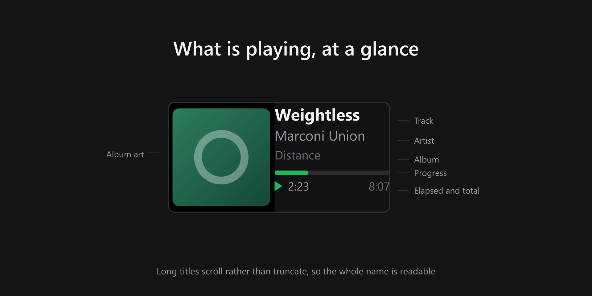
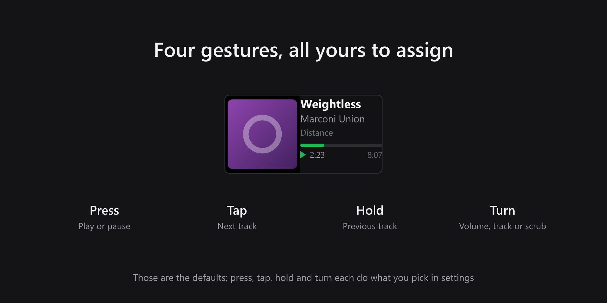
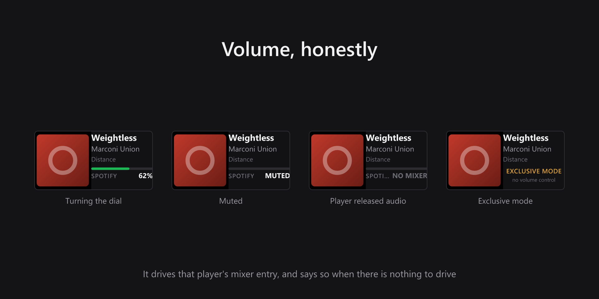
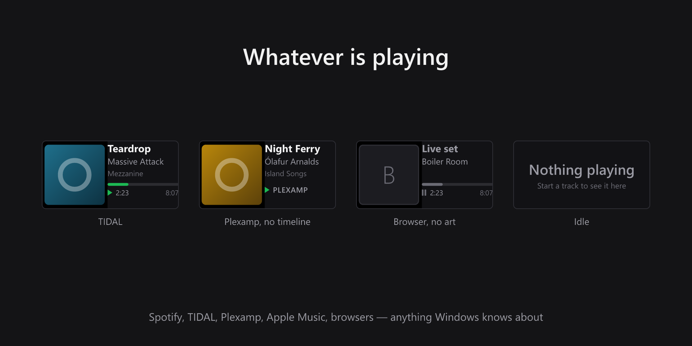

Now Playing
Elgato Stream Deck plugin · Windows, Stream Deck + only
Turn a Stream Deck + dial into a now playing display. Album art, track, artist and album for whatever is playing on Windows, with a live progress bar and elapsed time. Press, tap, hold and turn each do what you pick.
- Album art from the player
- Live progress and elapsed time
- Long titles scroll, never truncate
- Four configurable gestures
- Volume moves that player only
- Turn for volume, track or scrub
- Follows whatever is in front
- Honest about what it cannot do
What it looks like




Why the volume behaves like that
Turning the dial moves the displayed player's own entry in the Windows mixer, never the system slider. A dial captioned TIDAL that quietly turned down everything on the machine would be worse than no dial at all.
That choice has consequences the strip reports rather than hides. A player that has released its audio stream has no mixer entry to move, so the readout says so instead of showing zero. A player holding the device in WASAPI exclusive mode still accepts the commands and still reads a level back — so a percentage there would be a lie, and the strip says exclusive mode instead. Likewise, players that publish no position or duration get their name and state rather than an empty bar over two placeholders, and a session with no artwork gets a stand-in rather than an empty square.
What you need
- Operating system
- Windows 10 or later
- Stream Deck
- Stream Deck software 7.1 or later, and a Stream Deck + or Stream Deck Studio. The action is a dial, so there is nothing to put on a plain key.
- Players
- Anything that reports to Windows media controls — Spotify, TIDAL, Plexamp, Apple Music, foobar2000 and browser players all appear without configuration
Support
Bug reports and feature requests are best filed on GitHub, where they can be tracked against a release.